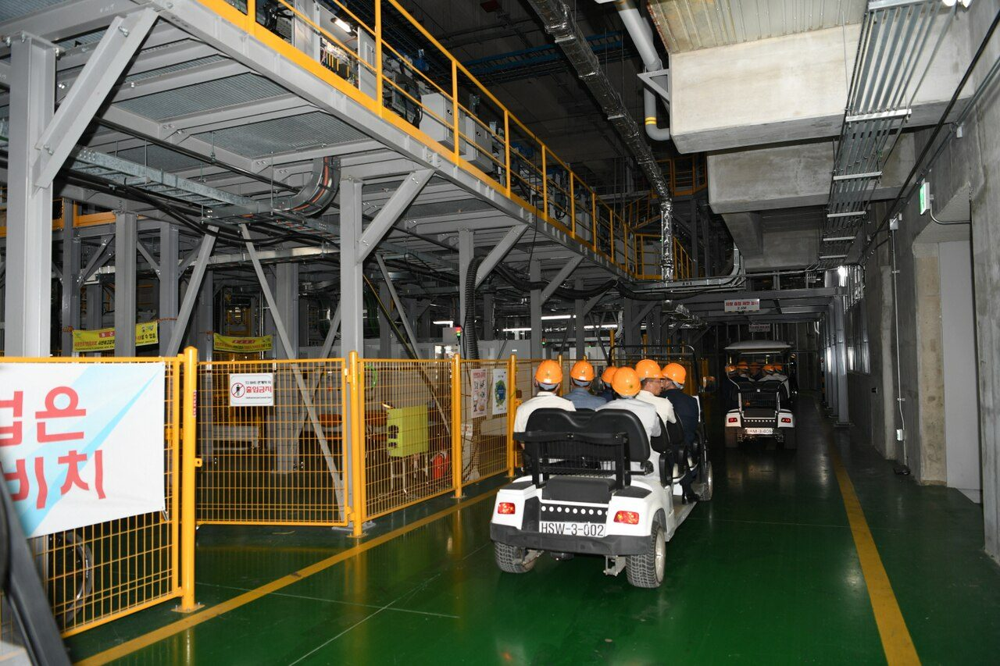
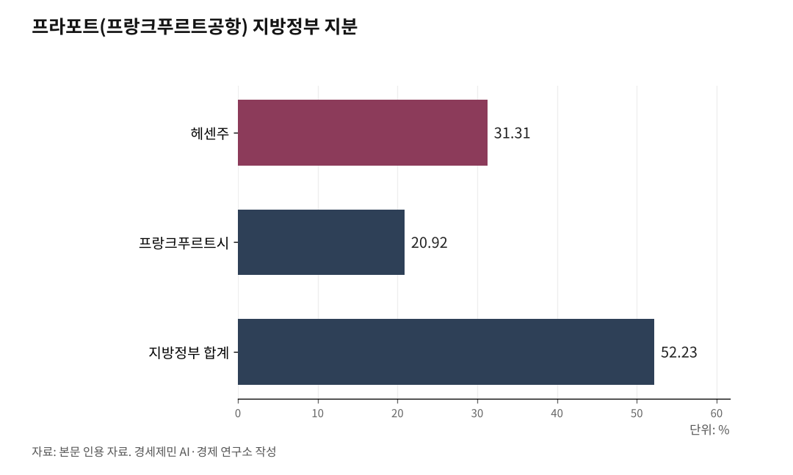

[세계3위 인천공항미래⑦] 활성화는 공사 독립성 위에서만 굴러간다, 통합은 그 토대를 흔든다
흑자 공사가 적자 지방공항과 10조 가덕도 건설비를 떠안으면 자율 집행력이 준다
분산 20년이 지방을 못 살렸다, 답은 분권이다, 5극3특 권역별 공항공사로 가야 한다
인하대 해양AI융합센터 김갑봉 연구교수
인천공항을 키우는 레버는 환승과 배후단지, 5단계 확장이다. 그 레버를 모두 인천국제공항공사(IIAC)가 자체 권한으로 당겨야 작동한다. 토대는 공사 독립성이다. 그런데 지금 그 토대가 흔들린다. 정부가 인천국제공항공사와 한국공항공사(KAC), 가덕도신공항건설공단 3개 기관 통합을 검토하고 있다.

거버넌스는 곁가지가 아니라 줄기다. 시한이 박힌 이 문제부터 짚는다.
1. 주체가 무너지면 레버가 다 무너진다
공항을 움직이는 사슬은 주체와 환경, 자원, 작동원리로 짠다. 공사가 그 출발점인 주체다. 주체가 흔들리면 앞선 글에서 짚은 환승도 배후단지도 5단계도 사장이 제 손으로 밀어붙일 수 없다.
의사결정권이 중앙으로 빨려가면 자율 집행이 사라진다. 통합은 이미 검토 단계로 들어왔고, 결정되면 되돌리기 어려운 일회성 구조변경이다. 연계망이나 운수권은 시한이 길지만, 거버넌스는 지금 지키지 못하면 끝난다. 그래서 가장 먼저 둔다.

2. 통합은 황금 거위 배를 가르는 일이다
통합 논리부터 듣는다. 한국공항공사가 떠안은 지방공항 적자를 형평 있게 나누고, 10조원대 가덕도신공항 건설비를 흑자 공사 힘으로 메우자는 것이다. 한국공항공사 노조가 찬성하는 까닭이다.
그러나 셈이 맞지 않는다. 인천국제공항공사는 2023년 흑자 전환 뒤 2025년까지 누적 영업이익 약 2조원을 낸 흑자 공사다. 한국공항공사는 2022년부터 2025년까지 누적 적자가 약 3000억원이다. 흑자 공사가 적자 운영권과 10조원대 건설비를 한꺼번에 떠안으면, 인천에 쓸 곳간이 마른다.
공사는 코로나19 3년 동안 1조7090억원 적자를 냈다. 정부는 한 푼도 보태지 않았다. 흑자로 돌아서자 2248억원을 배당으로 가져갔다. 적자는 혼자 견디게 하고 흑자는 거둬가는 구조다. 여기에 통합까지 얹으면 황금 거위 배를 가르는 셈이다.
자체조달 능력이 그 곳간의 핵심이다. 인천국제공항공사는 정부출자금 약 3조3000억원에 공사채를 더해 1~4단계 건설에 약 18조원을 독립채산제로 투입했다. 건설 재원의 82%를 스스로 조달했다. 이 힘이 통합으로 묽어지면 5단계도 배후단지도 동력을 잃는다.
3. 분산과 분권은 다르다
같은 정부가 해양수산부를 부산으로 보냈다. 현장에 가까이 가야 정책이 산다는 논리였다. 인천공항은 한국 국제항공화물 대부분이 지나는 현장 그 자체다. 현장 논리를 그대로 적용하면 공사는 독립과 권한 강화로 가야 맞다.
분산과 분권은 다르다. 분산은 기관을 지방으로 옮기되 권한은 중앙이 쥔다. 분권은 권한 자체를 지방에 넘긴다. 20년 동안 분산을 했지만 지방소멸은 빨라졌고 수도권 집중은 깊어졌다.
통합은 분권의 반대다. 분산조차 아닌 집중이다. 3개 기관을 하나로 묶으면 중앙정부 산하에 거대한 공항 독점체가 선다. 지방공항 착근성도 전문성도 묽어진다.
4. 독일은 주정부가 공항 주인이다
연방제 독일은 공항을 주(州) 주도로 나눠 운영한다. 연방정부가 공항을 하나로 묶지 않는다.
프랑크푸르트공항을 운영하는 프라포트(Fraport)는 헤센주가 31.31%, 프랑크푸르트시가 20.92%로 지방정부 지분이 과반인 52.23%다. 뮌헨공항은 바이에른주가 51%로 과반을 쥐고 독자 운영한다. 프랑크푸르트는 프랑크푸르트대로, 뮌헨은 뮌헨대로 경쟁하며 큰다. 이것이 분권이다.
5. 답은 5극3특 권역별 공항공사다
통합 대신 분권이다. 경인과 부울경, 대구경북, 호남, 충청 권역에 제주와 강원을 더해, 권역별 공항공사가 자기 공항을 키우는 5극3특 체제를 제안한다.
부울경이 김해공항 흑자로 가덕도를 짓고, 대구경북이 대구공항을 발판으로 신공항을 키우며, 호남이 무안공항을 키우고, 충청이 청주공항을 넓히는 식이다. 각 공사가 독립채산제로 공사채를 갚고 배당을 낸다.
재원도 길이 있다. 인천국제공항공사 배당을 국고로 빨아들이는 대신 공항 특별회계로 돌려 지방 신공항에 직접 출자하면, 흑자 공사를 죽이지 않고도 지방 공항을 살린다.
사장이 자체 권한만으로 통합을 막을 수는 없다. 그러나 통합이 활성화의 토대를 허무는 일임을 정부와 국회, 인천시에 또렷이 알리는 것은 사장의 몫이다.
거버넌스가 집행 속도를 가른다. 주체가 서야 환승도 화물도 배후단지도 사장 손에서 움직인다. 통합으로 가면 자율이 줄고, 분권으로 가면 권역이 제 몫을 키운다. 인천이 걸어야 할 길은 분권이다.
연결망은 또 다른 토대다. 다음 글에서 지방공항 직결과 고속철도로 관문 수요를 어떻게 키울지 짚는다.
이 글은 인천공항의 미래를 다루는 연재의 일곱 번째 글이다.
참고문헌
인천국제공항공사, "건설사업 개요"(1단계 5조6000억원, 2단계 3조원, 3단계 4조6000억원, 4단계 4조8000억원, 합계 18조원), https://www.airport.kr/co_ko/767/subview.do
인천국제공항공사, "인천공항 개항 25주년" 보도자료(1~4단계 총사업비 18조170억원 중 국고지원 3조2874억원 18%, 자체조달 82%), 2026.3.27.
공공기관 경영정보 공개시스템(ALIO), 인천국제공항공사·한국공항공사 감사보고서·경영공시(2025년 인천국제공항공사 매출 3조672억원·영업이익 8811억원, 한국공항공사 영업손실 187억원), https://www.alio.go.kr
Fraport AG, "Development in Shareholder Structure"(헤센주 31.31%, 프랑크푸르트시 20.92%, 합계 52.23%), Annual Report 2024., https://www.annual-report.fraport.com/annual-report/2024/en/
Flughafen München GmbH, "Situation of the Group"(바이에른주 51%, 연방정부 26%, 뮌헨시 23%), Integrated Report 2023., https://report2023.munich-airport.com/
한국경제, "인천공항·한국공항公 통폐합 추진"(3개 기관 통합 검토, 가덕도 건설비 최소 10조원대), 2026.3.15., https://www.hankyung.com/article/2026031521731
경향신문, "정부, 인천공항 적자 땐 한푼도 안 줘놓고…흑자 땐 절반 가까이"(코로나19 3년 적자 1조7090억원, 흑자 전환 뒤 배당 2248억원), 2024.6.11., https://www.khan.co.kr/article/202406111041001
경향신문, "인천공항·공항공사에 가덕도까지…정부 3개 기관 통합 추진에 노조 반발"(가덕도신공항 10조7000억원, 재정경제부 "통합 결정된 바 없어", 인천공항 7개 노조 공동투쟁위 반대 성명), 2026.3.16., https://www.khan.co.kr/article/202603161126001
아시아투데이, "한국공항공사 노조 '20년 넘은 불균형 한계 봉착, 상생 방안 내달라'"(한국공항공사 노조 통합 찬성 입장), 2026.3.17., https://www.asiatoday.co.kr/kn/view.php?key=20260317010005176
인천투데이, "[심층] 흑자 전환 앞둔 한국공항공사, 통합 근거 부족 '권역별 분리' 대안"(한국공항공사 영업손익 2022년 -2050억원, 2023년 -560억원, 2024년 -115억원, 김해공항 2024년 영업이익 662억원, 인천국제공항공사 2024년 영업이익 7411억원), 2026.3.27., https://www.incheontoday.com/news/articleView.html?idxno=317023
뉴스핌, "여객 회복에 웃은 인국공…적자 공항공사·가덕도 부담 짊어지나"(ALIO 감사보고서 기준 2025년 인천국제공항공사 영업이익 8811억원, 한국공항공사 영업손실 187억원, 가덕도신공항건설공단 완전자본잠식, 한국공항공사 노조 찬성), 2026.5.13., https://www.newspim.com/news/view/20260512001012
사진 출처
· [대표사진] National Fire Agency, "20190710하계 휴가철 대비 인천국제공항 현장점검(소방청장 정문호)6.jpg", 위키미디어 공용, 공공누리 제1유형, https://commons.wikimedia.org/wiki/File:20190710%ED%95%98%EA%B3%84_%ED%9C%B4%EA%B0%80%EC%B2%A0_%EB%8C%80%EB%B9%84_%EC%9D%B8%EC%B2%9C%EA%B5%AD%EC%A0%9C%EA%B3%B5%ED%95%AD_%ED%98%84%EC%9E%A5%EC%A0%90%EA%B2%80(%EC%86%8C%EB%B0%A9%EC%B2%AD%EC%9E%A5_%EC%A0%95%EB%AC%B8%ED%98%B8)6.jpg
※ 이 기사는 인공지능을 활용해 작성했습니다. 사실관계는 저자가 확인했습니다.
관련기사
- [세계3위 인천공항미래⑥] 통과하는 공항에서 만드는 공항으로
- [세계3위 인천공항미래⑧] 강한 관문은 지방까지 닿아야 두꺼워진다, 연결망이 답이다
- [세계3위 인천공항미래⑤] 반도체는 전략 자원이다, 다음 알짜는 배후단지에서 키운다
- [세계3위 인천공항미래⑨] 인천공항 2033년 포화, 5단계는 지금 삽 떠야 한다
저작권자 © AI경세제민 무단전재 및 재배포, AI학습 및 활용 금지